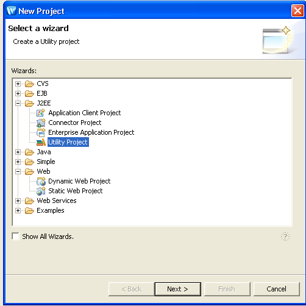
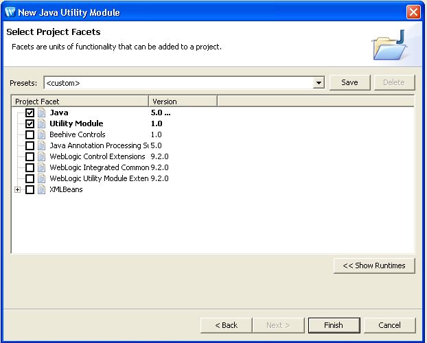
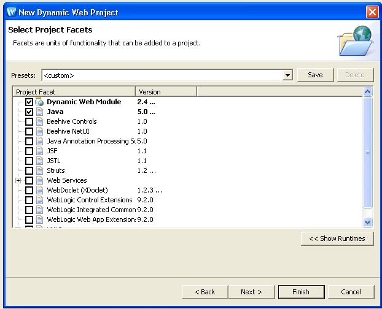
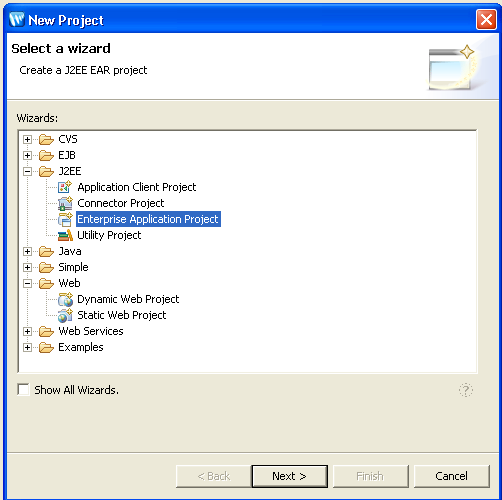
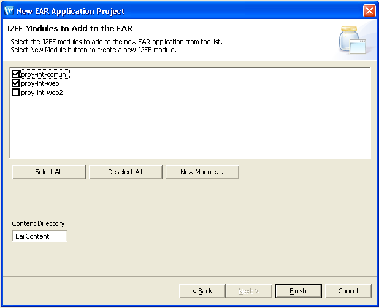
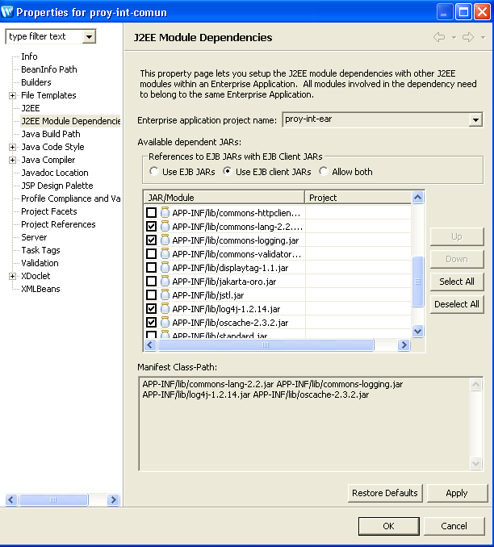
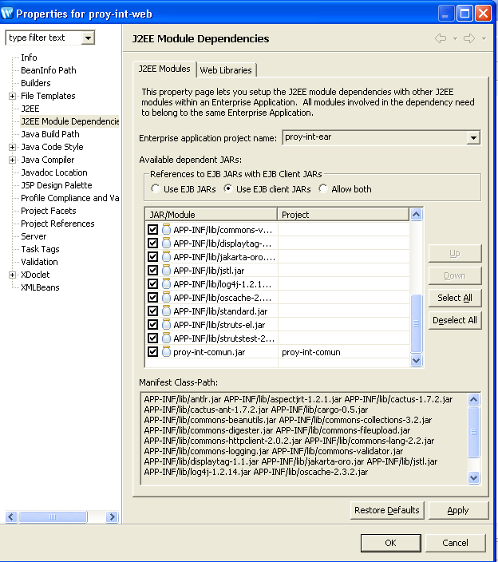
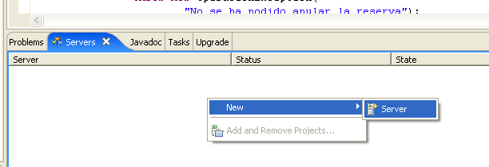
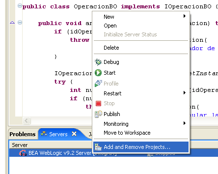

Servidores de aplicaciones
Introducción
En esta sesión tenemos dos objetivos principales:
- Por un lado, crear un dominio con weblogic, que será el que usaréis más adelante en los siguientes módulos, y que incorpore la mayor parte de las características vistas en el módulo de servidores de aplicaciones.
- Migrar el proyecto desarrollado hasta el momento a Weblogic, creando un EAR.
Creación del dominio
El dominio a crear debe tener las siguientes características:
Dominio: Integracion
| Nombre del servidor | Dirección de escucha | Puerto de escucha | Nombre DNS | Grupo primario | Grupo secundario |
| admin | 7001 | Compañero1 | |||
| serva | 4001 | Compañero1 | grupo1 | grupo2 | |
| proxy | 7001 | Compañero2 | |||
| servb | 4001 | Compañero2 | grupo2 | grupo1 | |
| servc | 5001 | Compañero2 | grupo2 | grupo1 |
Debéis crear una fuente de datos de la base de datos del proyecto de integración. Llamaréis al recurso JNDI biblioteca.
En el servidor proxy podéis desplegar la aplicación creada en el ejercicio de la sesión 5 (tanto los nombres de los servidores como sus puertos de escucha son los mismos).
Creación y configuración del EAR. Migración del proyecto.
Ahora pretendemos crear un EAR (Enterprise Application Resource) con los proyectos desarrollados hasta el momento (el común y el web). Una aplicación enterprise (a menudo llamada simplemente aplicación, o aplicación J2EE) es una colección de recursos que se construyen juntos y se despliegan como una unidad a una instancia de un servidor Weblogic. También se pueden archivar en una fichero EAR.
Un proyecto EAR puede estar formado a su vez por varios proyectos: proyectos de utilidad, proyectos web, EJBs, servicios web, etc. El EAR nos va a permitir compartir recursos entre estos proyectos.
Vamos a comentar los pasos a seguir para crear el EAR. Partimos del proyecto de integración del proyecto web. Tenemos dos proyectos: el proy-int-comun y el proy-int-web.
- Importamos los dos proyectos dentro del Workshop. Nos aparecerán muchos errores, no tenemos que preocuparnos. Cambiamos el nombre de los proyectos a proy-int-comun2 y proy-int-web2. Nos puede dar un error indicando que no ha podido actualizar las referencias, no es problema.
- Vamos a empezar primero por el proyecto común. Vamos a copiar el contenido del proyecto
antiguo al nuevo. Seguimos los siguientes pasos:
- Creamos un nuevo proyecto de utilidad que llamaremos proy-int-comun. 
- Vamos dando las opciones por defecto hasta que nos permite seleccionar las facets que queremos que incluya. Deseleccionamos todas menos las indicadas en la siguiente figura. 
- Copiamos los fuentes (todos los paquetes de src) del antiguo al nuevo.
AvisoSi los seleccionamos con el ratón y los arrastramos estamos cambiando de sitio los ficheros. Si no los queremos perder, copiarlos y luego pegarlos en el destino.
- Hacemos lo mismo con los directorios: test, resources y db.
- Hemos terminado con el proyecto común. Tendremos algunos errores que luego solucionaremos.
- Vamos a hacer lo mismo con el proyecto web. Seguimos estos pasos:
- Creamos un proyecto de web dinámica que llamaremos proy-int-web. Dejamos las facets indicadas: 
- Copiamos los fuentes y los directorios test, resources, cactus y logs.
- Entramos dentro de WebContent. Copiamos los directorios css, imagenes, jsp y los ficheros index.jsp y jspRedirector.jsp.
- Entramos dentro del WEB-INF. Copiamos los ficheros struts-config.xml, validation.xml, validator-rules.xml y web.xml. Sobreescribimos este último.
- Copiamos las librerías del directorio WEB-INF/lib al correspondiente directorio del nuevo proyecto.
- Pasamos ahora a crear el EAR. Seguimos estos pasos:
- Creamos un nuevo proyecto EAR. 
- Lo llamaremos proy-int-ear. Le decimos que incluya los proyectos proy-int-comun y proy-int-web como módulos de esta aplicación. Nos dirá si incluye unas librerías, le decimos que sí. 
- Copiamos las librerías que necesite el proyecto común del proy-int-web al directorio EarContent/APP-INF/lib del proyecto proy-int-ear.
- Podemos borrar los proyectos antiguos, para que no nos molesten.
- Nos vamos a las propiedades del proyecto común. Vamos a la opción J2EE Module Dependencies y seleccionamos las librerías que nos hagan falta. En esto momento tienen que haber desparecido todos los errores del proyecto de integración común. 
- Nos vamos a las propiedades del proyecto web. Seleccionamos todas las librerías y también, esto es muy importante, el proyecto común. 
- No tendría que dar errores. Si los da, haced un clean de todos los proyectos. Nuestra aplicación está preparada para desplegar.
Ahora tenemos que importar el servidor desde la solapa Servers. Le decimos New Server e importamos el dominio antes creado.

Con el servidor creado, llamamos a añadir y eliminar proyectos. Añadimos el EAR creado.

Sólo queda poner en marcha el servidor (botón derecho y Start) y publicar la aplicación. Podemos modificar lo que queremos del proyecto y simplemente diciendo Republish nos desplegaría de nuevo la aplicación en el servidor.